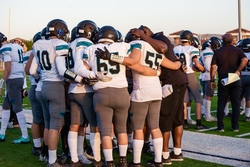

Patrick Salem
Hello,
My name is Patrick Salem, I’m currently a student at the University of California Riverside studying Biology. I’m on track to graduate by the year of 2025 with a degree in biology and on the way to Med-School. My ultimate goal is to become an emergency room trauma surgeon. My biggest passion is helping others, it’s been a great characteristic of mine since I was little and I am hoping to follow through with that throughout my everyday life. Furthermore, I graduated Highschool with a 4.16 average GPA and have the same goal for college as well. I’ve worked in many different fields throughout my life including fast food, retail and lastly sales. I speak English, Arabic, Spanish and a bit of French as well. A bit more about me and my journey, I was born in the U.S. and gained citizenship that way, but three months later I moved back to Egypt and lived my childhood there up until 11 years old. I would also like to take this opportunity to portray the hardships me and my family went through economically when first moving. We lived the first two years with my aunt, and shared two bedrooms between the four of us. I didn’t know any English. I began researching, studying, listening, watching anything that will help me learn and improve the English language. I locked myself in my room for hours at a time, reading children books and watching YouTube videos with subtitles on just to sound out the words in hope to lose the Arabic accent. This was my breakthrough. I repeated that process for a year, every time with a harder book, a longer video, and sitting in the mirror having conversations with myself until finally I felt ready to reach out to another student. My parents worked minimum wage jobs for those two years and due to their hard work they were able to move on to better jobs which allowed us to rent a two bedroom apartment for quite some time. We scavangered for clothes in thrift stores and furniture from the salvation army but throughout all this, we were still appreciative of what we have and most importantly happy. Life hasn’t been the easiest, but it is what you make of it, it’s the positive attitude and smiles from each other that kept us going. Going away to college has been one of the most exciting and challenging times of my life due to the fact that I get to learn about what I am most interested in but also the separation from my parents who gave their all for the future of their children will be my road to maturity. I am truly grateful for this country, system and this opportunity to be the best version of myself yet. I have set some goals for myself, and I plan to execute everything correctly to achieve those goals and yet become a better person all while helping society in my everyday life.
Experience
Shift Lead
• Opened and closed the store weekly
• Was resposible for the entire staff
• dealt with all complains from customers
Busser
• Responsible for checking customers in and out
• Cleaned tables and served food/ Drinks
• Closed every night
Salesman
• Learned about Rv's and trailers
• Began taking customers through walkthroughs
• Negotiated Prices
• Ran credit and got them approved
Education
UC Riverside
Santiago Highschool
Portfolio
